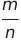
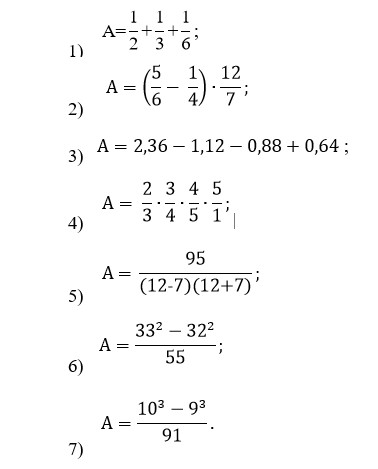

Натуральные числа строятся конструктивно, начиная с единицы, прибавлением на каждом шаге одной единицы: 1, 1 + 1, 1 + 1 + 1, …
Запись натуральных чисел имеет длинную историю. Современное общество пользуется десятичной системой, в которой введены 10 цифр: 1, 2 = 1 + 1, 3 = 2 + 1, …, 9 = 8 + 1 и 0. Число, следующее за числом 9, записывается в виде 10. Далее, считая десятками, сотнями (10 × 10), тысячами и т. д., каждое натуральное число представляем в виде a0 + a1 · 10 + … + ak · 10k (ak ≠ 0), где 0 ≤ ai ≤ 9, и записываем последовательностью цифр akak−1 … a0.
В информатике большую роль играет двоичная система, использующая две цифры: 0 и 1 — и основанная на представлении числа в виде суммы степеней числа 2, которое в двоичной системе имеет запись 10.2.Целые числа:
Получаются из натуральных добавлением нуля и отрицательных чисел. Множество натуральных чисел обозначается буквой N, целых чисел — буквой Z. Ясно, что N ⊂ Z, т.е. это означает, что всякое натуральное число одновременно есть целое.
3.Рациональные числа:
Положительные рациональные числа можно получить, считая доли единицы: m раз взятая n-я доля единицы (m и n — натуральные числа) есть рациональное число. Его можно записать в виде обыкновенной дроби  . Одно и то же количество можно получить, используя разные доли. Например, ясно, что пирога и  пирога — одно и то же.
Две обыкновенные дроби равны между собой (т. е. являются записями одного и того же рационального числа) тогда и только тогда, когда совпадают натуральные числа m1n2 и m2n1:
Построив положительные рациональные числа, к ним обычным образом добавляют отрицательные и нуль.
Множество рациональных чисел обозначается буквой Q.
Целые числа m отождествляются с дробями.
Имеют место включения N ⊂ Z ⊂ Q.
пирога — одно и то же.
Две обыкновенные дроби равны между собой (т. е. являются записями одного и того же рационального числа) тогда и только тогда, когда совпадают натуральные числа m1n2 и m2n1:
Построив положительные рациональные числа, к ним обычным образом добавляют отрицательные и нуль.
Множество рациональных чисел обозначается буквой Q.
Целые числа m отождествляются с дробями.
Имеют место включения N ⊂ Z ⊂ Q.
4.Арифметические операции:
В множестве рациональных чисел Q определены две арифметические операции — сложение и умножение, подчиняющиеся известным законам — переместительному, сочетательному, распределительному.
ВОПРОСЫ И УПРАЖНЕНИЯ
1. Какие из следующих выражений имеют значение, равное 1:
2. Стоимость товара в первый раз снизили на a%, во второй раз — на b% от новой цены. В каких случаях в результате стоимость товара составила 60% исходной цены:
3. Вычислите с помощью калькулятора значения следующих числовых выражений: 1. Количество «счастливых» автобусных билетов:
2. Вероятность того, что в классе из 30 человек есть совпадающие дни рождения:
4. Оцените, к какому из указанных чисел ближе всего число
- 0,001;
- 0,01
- 0,1
- 1
5. В таблице указаны точки плавления льда и кипения воды в четырех температурных шкалах — Цельсия (С), Фаренгейта (F), Кельвина (К) и Реомюра (R). Считая, что температура человеческого тела в градусах Цельсия равна 37, вычислите ее в других шкалах, если зависимость между шкалами линейная: